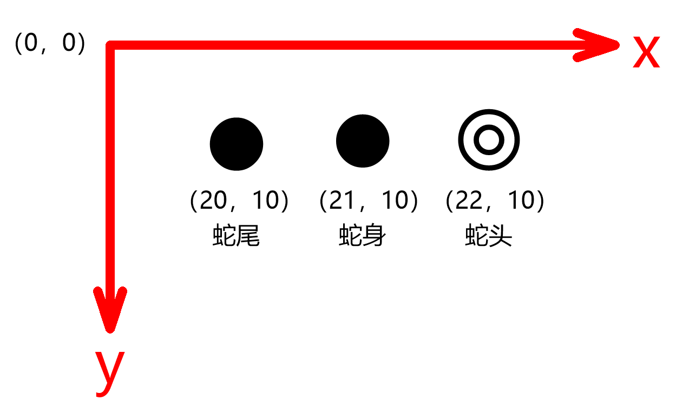
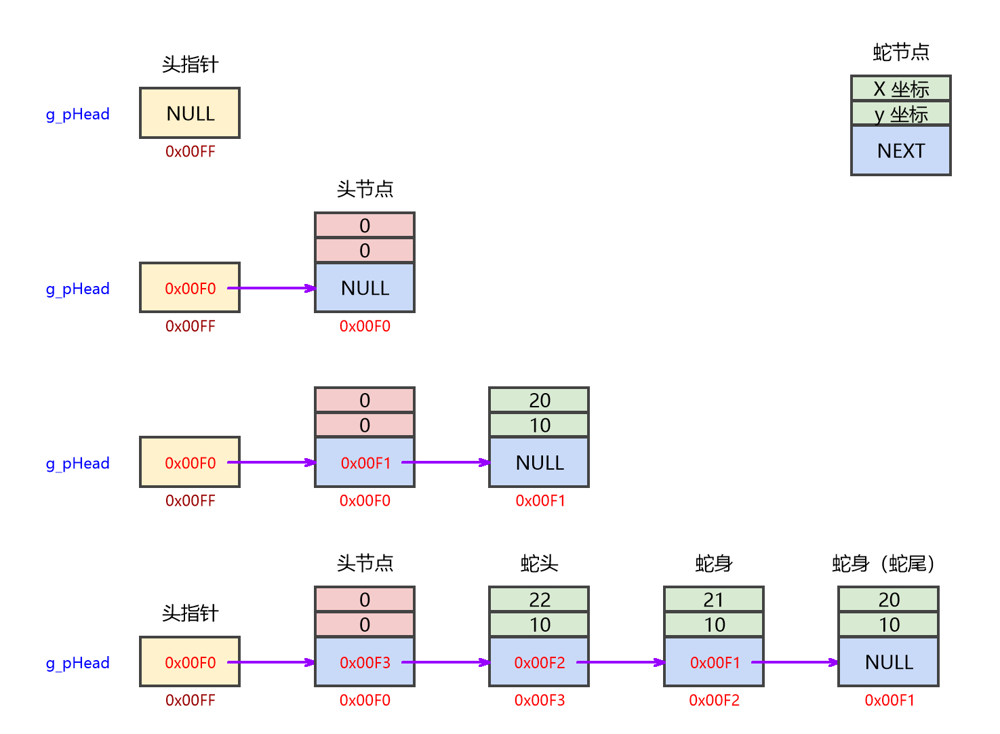
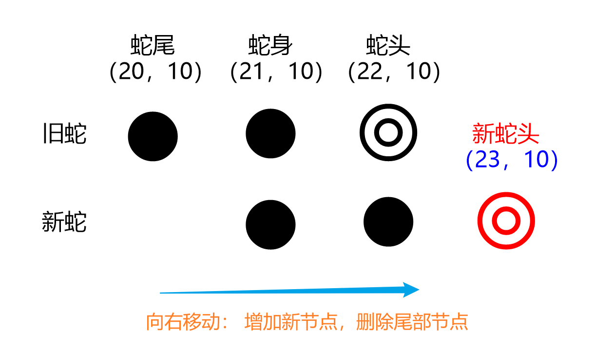
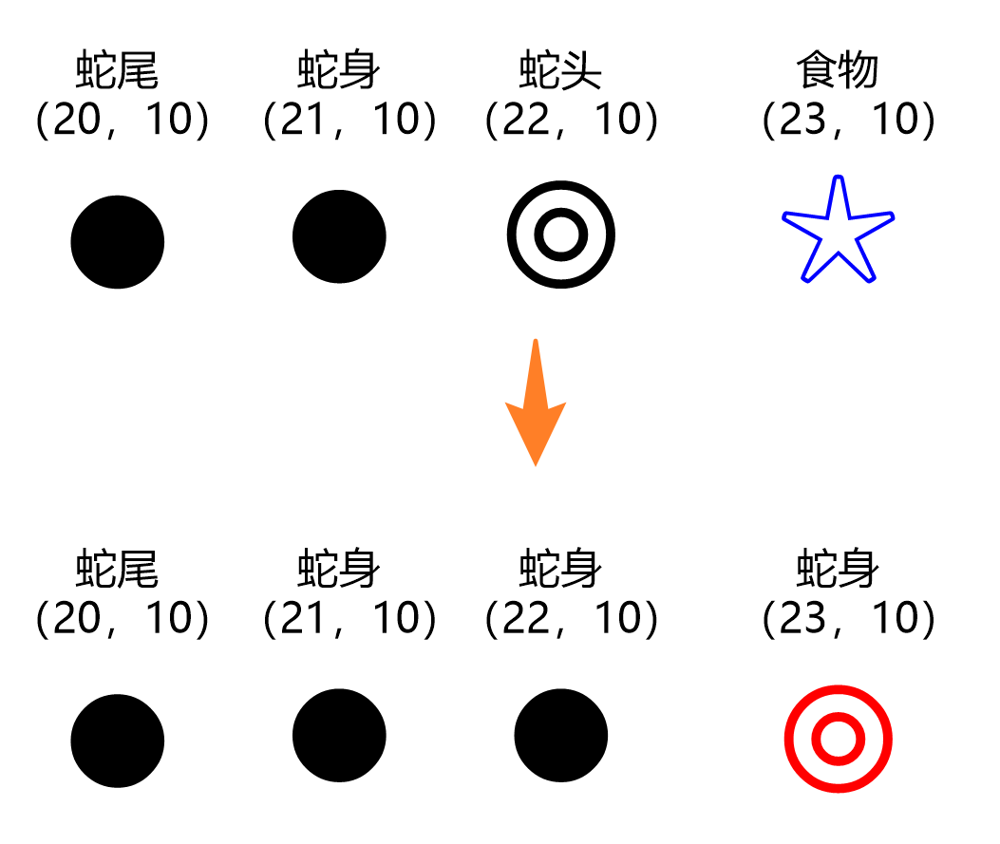

<!DOCTYPE lake>
<span class="yuque-card-unsupported">[video]</span><h1 data-lake-id="HV8Km" id="HV8Km"><span data-lake-id="u151e8382" id="u151e8382">V1.0 - 结构体数组版</span></h1><span class="yuque-card-unsupported">[codeblock]</span><h2 data-lake-id="V3l3s" id="V3l3s"><span data-lake-id="u6761d47f" id="u6761d47f">1.1&gt; 设计步骤</span></h2><p data-lake-id="u75c48ce4" id="u75c48ce4"><span data-lake-id="ud28352a5" id="ud28352a5">画地图 -&gt; 画蛇 -&gt; 产生食物 -&gt; 移动蛇（随时间走，按键换方向）-&gt; 吃食物 -&gt; 碰撞监测；</span></p><p data-lake-id="ud53cc2ec" id="ud53cc2ec"></p><hr/><h2 data-lake-id="Fdamj" id="Fdamj"><span data-lake-id="ua8163abd" id="ua8163abd">1.2&gt; </span><span class="lake-fontsize-11" data-lake-id="u976dd754" id="u976dd754" style="color: rgb(0, 0, 0)">GetAsyncKeyState()</span></h2><p data-lake-id="u6db6d602" id="u6db6d602"><span data-lake-id="ub7fa2744" id="ub7fa2744">非阻塞函数</span></p><p data-lake-id="u48edb7ff" id="u48edb7ff"><span class="lake-fontsize-12" data-lake-id="uc2513075" id="uc2513075" style="color: rgba(0, 0, 0, 0.85)">用于检查一个按键是按下、释放，还是处于按下后的 “粘滞” 状态等情况；</span></p><span class="yuque-card-unsupported">[codeblock]</span><p data-lake-id="ufc650452" id="ufc650452"><br/></p><p data-lake-id="u10461966" id="u10461966"><span data-lake-id="u47f896e7" id="u47f896e7">返回值：</span></p><table class="lake-table" data-lake-id="Npkep" id="Npkep" style="width: 640px" width-mode="contain"><colgroup><col width="226"/><col width="414"/></colgroup><tbody><tr data-lake-id="ufb29e104" id="ufb29e104"><td data-lake-id="u7308fe24" id="u7308fe24" style="background-color: #C1E77E"><p data-lake-id="u25736c4f" id="u25736c4f" style="text-align: center"><span data-lake-id="ub2c0ebec" id="ub2c0ebec">返回值</span></p></td><td data-lake-id="u68103d7c" id="u68103d7c" style="background-color: #C1E77E"><p data-lake-id="u56b087b8" id="u56b087b8" style="text-align: center"><span data-lake-id="u6f973c24" id="u6f973c24">含义</span></p></td></tr><tr data-lake-id="uc3f2a80e" id="uc3f2a80e"><td data-lake-id="ufe4e3f36" id="ufe4e3f36" style="vertical-align: middle"><p data-lake-id="u4fc5c154" id="u4fc5c154"><span data-lake-id="u1d33221d" id="u1d33221d">16bit最低位 bit0</span></p></td><td data-lake-id="u75707712" id="u75707712" style="vertical-align: middle"><p data-lake-id="u6b6aeda9" id="u6b6aeda9"><span data-lake-id="u71c8161a" id="u71c8161a">0：未被按下，</span></p><p data-lake-id="u431eaf06" id="u431eaf06"><span data-lake-id="u59f1d306" id="u59f1d306">1：按下</span></p></td></tr><tr data-lake-id="u84e87726" id="u84e87726" style="height: 35px"><td data-lake-id="uf961e44b" id="uf961e44b" style="vertical-align: middle"><p data-lake-id="u7503cac0" id="u7503cac0"><span data-lake-id="u4492c4c2" id="u4492c4c2">16bit的最高位 bit15</span></p></td><td data-lake-id="uea9d152c" id="uea9d152c" style="vertical-align: middle"><p data-lake-id="ud3983f06" id="ud3983f06"><span class="lake-fontsize-12" data-lake-id="u33df61ee" id="u33df61ee" style="color: rgba(0, 0, 0, 0.85)">自上次调用</span><code data-lake-id="u99d4f6fc" id="u99d4f6fc"><span class="lake-fontsize-11" data-lake-id="ud8493c95" id="ud8493c95" style="color: initial">GetAsyncKeyState</span></code><span class="lake-fontsize-12" data-lake-id="u7a065ea9" id="u7a065ea9" style="color: rgba(0, 0, 0, 0.85)">函数后，</span></p><p data-lake-id="u3a51d558" id="u3a51d558"><span class="lake-fontsize-12" data-lake-id="ufad1f0fa" id="ufad1f0fa" style="color: rgba(0, 0, 0, 0.85)">该按键是否被按下过；</span></p><p data-lake-id="u4e408098" id="u4e408098"><span data-lake-id="u67e76612" id="u67e76612">0：上次调用后未被按下过</span></p><p data-lake-id="ufd3f8264" id="ufd3f8264"><span data-lake-id="u943e639d" id="u943e639d">1：上次调用后被按下过</span></p></td></tr></tbody></table><hr/><h1 data-lake-id="EwlM8" id="EwlM8"><span data-lake-id="ucad7fdf7" id="ucad7fdf7">V2.0 - 链表版-带头节点</span></h1><span class="yuque-card-unsupported">[codeblock]</span><p data-lake-id="uc87949fb" id="uc87949fb"><br/></p><h2 data-lake-id="eFF7V" id="eFF7V"><span data-lake-id="u5126d24c" id="u5126d24c">2.1&gt; 构建蛇</span></h2><p data-lake-id="ue910b75a" id="ue910b75a"><span data-lake-id="ub74c291e" id="ub74c291e">带头节点的链表，从头部插入新节点；</span></p><p data-lake-id="u1cc029db" id="u1cc029db"></p><p data-lake-id="u3156a64f" id="u3156a64f"><br/></p><p data-lake-id="u067f1eb9" id="u067f1eb9"></p><hr/><h2 data-lake-id="WH7fA" id="WH7fA"><span data-lake-id="u2b54246b" id="u2b54246b">2.2&gt; 移动蛇</span></h2><p data-lake-id="ud484283c" id="ud484283c"><span data-lake-id="ue9a8aed4" id="ue9a8aed4">增加新节点，以头部插入方式，打印蛇就非常方便，永远是第1个节点；</span></p><p data-lake-id="u3fd32b1e" id="u3fd32b1e"></p><hr/><h2 data-lake-id="jr4ec" id="jr4ec"><span data-lake-id="u3ccc7f87" id="u3ccc7f87">2.3&gt; 蛇吃食物</span></h2><p data-lake-id="u346b08b8" id="u346b08b8"><span data-lake-id="u5e522d68" id="u5e522d68">蛇吃到食物，只是新增个节点， 不删除尾节点，非常有意思！！</span><span data-lake-id="ua4c12191" id="ua4c12191">🙉🤸</span></p><p data-lake-id="u539dfdc8" id="u539dfdc8"></p><p data-lake-id="u3027ff5a" id="u3027ff5a"><br/></p><hr/><h1 data-lake-id="YCvBb" id="YCvBb"><span data-lake-id="ub6aaace3" id="ub6aaace3">V3.0 - 链表版-不带头节点</span></h1><span class="yuque-card-unsupported">[codeblock]</span><p data-lake-id="ub02a143e" id="ub02a143e"><br/></p>